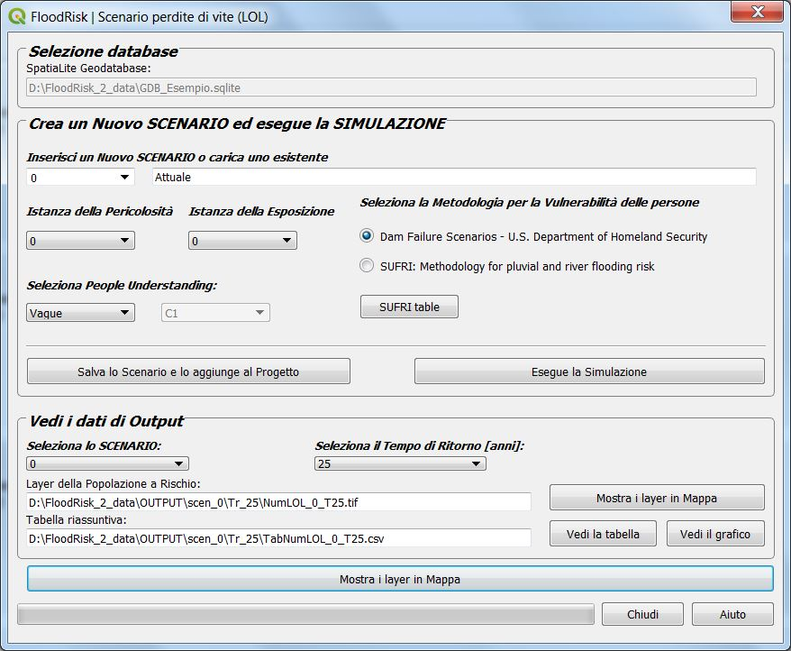

Scenario perdite di vite (LOL)¶
La finestra Scenario perdite di vite (LOL) consente di valutare la mappa della popolazione a rischio ed il numero di potenziali vittime per un dato SCENARIO. Infatti, come per il danno economico, anche nello scenario delle perdite di vite è possible effettuare la valutazione per differenti scenari che sono la combinazione di una pericolosità e di una esposizione.
La mappa della popolazione a rischio è ottenuta mediante sovrapposizione della mappa dell’inondazione e di quella della densità di popolazione. Dalla mappa delle popolazione a rischio si ottiene la mappa delle potenziali vittime motiplicando la popolazione a rischio per la percentuale di perdite (fatality rate). In aggiunta alla scelta della combinazione di pericolosità ed esposizione, FloodRisk2 consente la scelta fra due possibili metodi di calcolo del fatality rate:
Dam Failure Scenarios - U.S. Department of Homeland Security
SUFRI: Methodology for pluvial and river flooding risk
Una volta scelto uno dei due metodi, occorre selezionare il valore da assegnare al parametro People Understanding. Per il significato completo del parametro si rimanda alla bibliografia, comunque per il caso del SUFRI, che è più articolato è possibile visionare la tabella “SUFRI table” premendo il relativo tasto. Per il caso del U.S. Department of Homeland Security si può assumere il valore vague se si ipotizza che l’evento avvenga di notte ed il valore Precise in caso avvenga di giorno.

La lista dei dati e dei risultati per ogni tempo di ritorno è riportata di seguito:
I dati riguardanti popolazione e la loro vulnerabilità sono memorizzati nel geodatabase.
I dati riguardanti il pericolo sono mappe di altezza massime e velocità massime dovute all’inondazione. Questi dati sono output di modelli idraulici 2D e sono caricarti nel sistema tramite un qualsiasi file del tipo GDAL Raster Formats.
Un ulteriore dato necessario per la valutazione della vulnerabilità è la mappa dei tempi di preavviso. Il tempo di preavviso indica la quantità di tempo che intercorre fra la ricezione dell’avviso e l’istante in cui la popolazione è interessata dall’evento di inondazione. Questi dati devono essere del tipo shapefile di poligoni avente il campo “TimeHours” contenente il valore del tempo di prevviso in ore.
I risultati sono mappe della popolazione a rischio ed in numero di potenziali vittime ed una Tabella Riassuntiva dei risultati che può essere visualizzata anche in forma grafica (istogramma).
Note
Layers dei risultati per ogni tempo di ritorno.
- Layer della popolazione a rishio (*_pop.tif)
un file tipo GeoTIFF File Format avente come output due bande:
- band1
densità della popolazione a rischio (persone per km quadrato)
- band2
densità di perdite di vite (persone per km quadrato)
- Tabella Riassuntiva (*_pop.csv)
un file tipo csv File Format contenete la tabella dei risultati raggruppato per Intervalli di altezze d’acqua